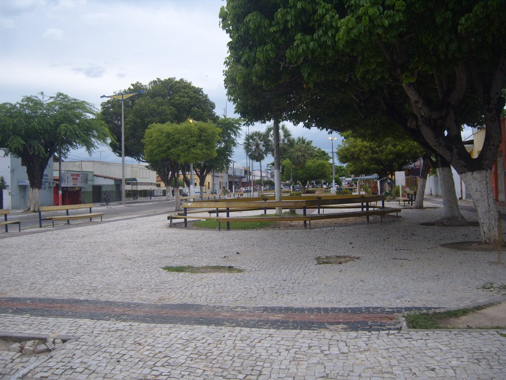

Informações técnicas sobre relevo, população, IDH etc.
| INFORMAÇÕES | |
|---|---|
| Municípios limítrofes | Norte: Horizonte, Guaiúba, Leste: Cascavel, Sul: Chorozinho, Oeste: Acarape, Barreira. |
| Fundação | 9 de setembro de 1890 (130 anos) |
| Área total | 254,435 km² |
| Clima | Semiárido |
| IDH | 0,659 — médio |
| PIB | R$ 1 004 505,29 mil |
| INFORMAÇÕES TERRITORIAIS | |
|---|---|
| Número de habitantes | 72 203 habitantes |
| Superfície de Pacajus |
25 448 hectares
254,48 km² |
| Densidade populacional | 283,7 ha./km² |
| Altitude de Pacajus | 77 metros de altitude |
| Coordenadas geográficas decimais |
Latitude:
-4.17398
Longitude: -38.4638 |
| Coordenadas geográficas sexagesimais | Latitude: 4° 10' 26'' Sul , Longitude: 38° 27' 50'' Oeste |
| INFORMAÇÕES DO MUNICÍPIO | |
|---|---|
| Endereço da Prefeitura Municipal de Pacajus |
Pacajus
Prefeitura de Pacajus
Rua Guarani, 600 PACAJUS - CE, 62870-000 Brasil |
| Telefone da prefeitura |
(85) 3348-1077
Internacional: +55 85 3348-1077 |
| Fax |
(85) 3348-1578
Internacional: +55 85 3348-1578 |
| Endereço electrónicoda prefeitura |
Não Disponível
|
| Site oficial do município | pacajus.ce.gov.br |
| INFORMAÇÕES DO ADMINISTRATIVAS | ||
|---|---|---|
| Prefeito de Pacajus | Flanky José Amaral Chaves | |
| Partido politico | PP | |
| INFORMAÇÕES DE TRANSPORTE | |
|---|---|
| Transporte urbano disponível | Não Disponível |
| Aeroporto |
Aeroporto Internacional Pinto Martins 44.9 km
Aeroporto Dix-Sept Rosado
167.3 km
Aeroporto de Sobral
215.2 km
|
| INFORMAÇÕES DE DISTÂNCIA A OUTRAS CIDADES | ||
|---|---|---|
| São Paulo : 2329 km | Rio de Janeiro : 2147 km | Brasília : 1656 km |
| Salvador : 979 km | Belo Horizonte : 1840 km | Manaus : 2398 km |
| Curitiba : 2633 km | Recife : 586 km mais perto | Goiânia : 1824 km |
| Belém : 1156 km | Porto Alegre : 3176 km | Guarulhos : 2307 km |
| Campinas : 2281 km | São Luís : 675 km | São Gonçalo : 2512 km |
| Distância calculada em linha reta! | ||
Conheça mais sobre a história da Pacajus.
História Pacajus
A região entre às margens do rio Choró e rio Acarape era habitada por índios como os Jenipapo, Kanindé, Choró e Quesito.
As origens de Pacajus, remontam ao início do século XVIII (provavelmente 1707),quando nestas terras foi instalada a Missão dos Paiacu. A instalação desta missão pelos jesuítas foi possível com a doação de uma légua de terras situadas nas margens do rio Choró, tendo como intermediário o desembargador Cristóvão Soares Reimão.
Este reduto teve uma certa configuração urbana, edificando-se casas residenciais e uma capela de taipa e chão batido, admitindo-se como padroeira Nossa Senhora da Conceição. Com a transferência dos índios para Portalegre, no Rio Grande do Norte em 1762, o local no qual foi construído uma capela de taipa e algumas casas passou a ser sítio Monte-Mor-o-Velho, que teve como administradores dois moradores de Cascavel: o sargento-mor Jerônimo de Antas Ribeiro e o padre José de Sousa.
Através da missão, depois sesmarias e ao redor da Igreja Velha (construída pelos índios no século XIX e que ainda existe) surgiu o núcleo urbano que hoje chama-se Pacajus.
Saiba mais sobre os melhores lugares e o que fazer em Pacajus.
Turismo
A praça da matriz é um ambiente aberto, ótimo lugar para encontros e por ser uma área grande e arejada é também um bom espaço para ativades físicas (Corridas, exercícios aeróbicos).
Endereço: Próximo a Pároquia de Nossa Sra da Conceição
Município: Pacajus - CE
CEP: 62870-000

Veja como chegar nos melhores pontos de Pacajus